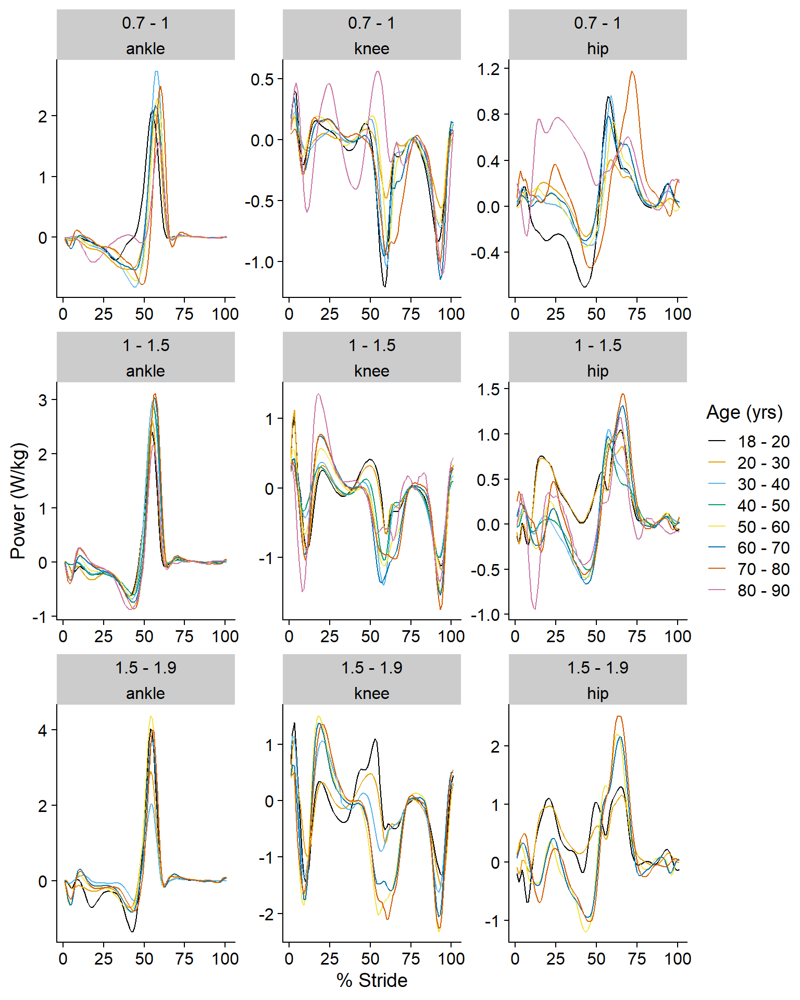

Last updated: 2021-02-25
Checks: 7 0
Knit directory: 2020_stairs_biomech/
This reproducible R Markdown analysis was created with workflowr (version 1.6.2). The Checks tab describes the reproducibility checks that were applied when the results were created. The Past versions tab lists the development history.
Great! Since the R Markdown file has been committed to the Git repository, you know the exact version of the code that produced these results.
Great job! The global environment was empty. Objects defined in the global environment can affect the analysis in your R Markdown file in unknown ways. For reproduciblity it’s best to always run the code in an empty environment.
The command set.seed(20210216) was run prior to running the code in the R Markdown file. Setting a seed ensures that any results that rely on randomness, e.g. subsampling or permutations, are reproducible.
Great job! Recording the operating system, R version, and package versions is critical for reproducibility.
Nice! There were no cached chunks for this analysis, so you can be confident that you successfully produced the results during this run.
Great job! Using relative paths to the files within your workflowr project makes it easier to run your code on other machines.
Great! You are using Git for version control. Tracking code development and connecting the code version to the results is critical for reproducibility.
The results in this page were generated with repository version 4035115. See the Past versions tab to see a history of the changes made to the R Markdown and HTML files.
Note that you need to be careful to ensure that all relevant files for the analysis have been committed to Git prior to generating the results (you can use wflow_publish or wflow_git_commit). workflowr only checks the R Markdown file, but you know if there are other scripts or data files that it depends on. Below is the status of the Git repository when the results were generated:
Ignored files:
Ignored: .Rhistory
Ignored: .Rproj.user/
Ignored: analysis/mediation.Rmd
Ignored: manuscript/
Ignored: output/all_data.pdf
Ignored: output/all_data_clean.pdf
Ignored: output/ankle_bamlss_b.RDS
Ignored: output/ankle_gamlss_m0.RDS
Ignored: output/ankle_gamlss_m1.RDS
Ignored: output/ankle_gamlss_m2.RDS
Ignored: output/ankle_gamlss_m3.RDS
Ignored: output/ankle_gamlss_m4.RDS
Ignored: output/ankle_gamlss_m5.RDS
Ignored: output/ankle_gamlss_m6.RDS
Ignored: output/ankle_gamlss_m7.RDS
Ignored: output/ankle_pwr.html
Ignored: output/bam_allspeed_ankle.RDS
Ignored: output/bam_allspeed_ankle2.RDS
Ignored: output/bam_allspeed_hip.RDS
Ignored: output/bam_allspeed_hip2.RDS
Ignored: output/bam_allspeed_knee.RDS
Ignored: output/bam_allspeed_knee2.RDS
Ignored: output/bam_selfspeed_ankle_outRm.RDS
Ignored: output/bam_selfspeed_hip_outRm.RDS
Ignored: output/bam_selfspeed_knee_outRm.RDS
Ignored: output/bamlss_allspeed_ankle.RDS
Ignored: output/bamlss_allspeed_hip.RDS
Ignored: output/bamlss_allspeed_knee.RDS
Ignored: output/bamlss_finalmod2_ankle.RDS
Ignored: output/bamlss_finalmod2_hip.RDS
Ignored: output/bamlss_finalmod2_knee.RDS
Ignored: output/bamlss_finalmod_ankle.RDS
Ignored: output/bamlss_finalmod_hip.RDS
Ignored: output/bamlss_finalmod_knee.RDS
Ignored: output/best_model_ankle.RDS
Ignored: output/best_model_hip.RDS
Ignored: output/best_model_knee.RDS
Ignored: output/big_ssa_diagnostics.pdf
Ignored: output/dist_comp_ankle_1.pdf
Ignored: output/dist_comp_ankle_2.pdf
Ignored: output/dist_comp_ankle_3.pdf
Ignored: output/dist_comp_ankle_4.pdf
Ignored: output/dist_comp_hip_1.pdf
Ignored: output/dist_comp_hip_2.pdf
Ignored: output/dist_comp_hip_3.pdf
Ignored: output/dist_comp_hip_4.pdf
Ignored: output/dist_comp_knee_1.pdf
Ignored: output/dist_comp_knee_2.pdf
Ignored: output/dist_comp_knee_3.pdf
Ignored: output/dist_comp_knee_4.pdf
Ignored: output/dxmod_ankle.pdf
Ignored: output/dxmod_hip.pdf
Ignored: output/dxmod_knee.pdf
Ignored: output/explore_plot.pdf
Ignored: output/explore_power_age.tiff
Ignored: output/explore_power_cycle.tiff
Ignored: output/explore_power_hist.tiff
Ignored: output/explore_power_sex.tiff
Ignored: output/explore_power_speed.tiff
Ignored: output/final_model.RData
Ignored: output/fukuchi_individual_clean_plot.pdf
Ignored: output/fukuchi_individual_plot.pdf
Ignored: output/gamlss_allspeed_ankle.RDS
Ignored: output/gamlss_allspeed_ankle2.RDS
Ignored: output/gamlss_allspeed_ankle3.RDS
Ignored: output/gamlss_allspeed_ankle4.RDS
Ignored: output/gamlss_allspeed_ankle_outRm.RDS
Ignored: output/gamlss_allspeed_hip.RDS
Ignored: output/gamlss_allspeed_hip2.RDS
Ignored: output/gamlss_allspeed_hip3.RDS
Ignored: output/gamlss_allspeed_hip4.RDS
Ignored: output/gamlss_allspeed_hip_outRm.RDS
Ignored: output/gamlss_allspeed_knee.RDS
Ignored: output/gamlss_allspeed_knee2.RDS
Ignored: output/gamlss_allspeed_knee4.RDS
Ignored: output/gamlss_allspeed_knee_outRm.RDS
Ignored: output/gamlss_ankle_allspeed.RDS
Ignored: output/gamlss_finalmod_ankle.RDS
Ignored: output/gamlss_finalmod_hip.RDS
Ignored: output/gamlss_finalmod_knee.RDS
Ignored: output/gamlss_hip_allspeed.RDS
Ignored: output/gamlss_knee_allspeed.RDS
Ignored: output/gamlss_self_ankle_outRm.RDS
Ignored: output/gamlss_self_hip_outRm.RDS
Ignored: output/gamlss_self_knee_outRm.RDS
Ignored: output/hip_gamlss_m0.RDS
Ignored: output/hip_gamlss_m1.RDS
Ignored: output/hip_gamlss_m2.RDS
Ignored: output/hip_gamlss_m3.RDS
Ignored: output/hip_gamlss_m4.RDS
Ignored: output/horst_individual_clean_plot.pdf
Ignored: output/horst_individual_plot.pdf
Ignored: output/knee_gamlss_m0.RDS
Ignored: output/knee_gamlss_m1.RDS
Ignored: output/knee_gamlss_m2.RDS
Ignored: output/knee_gamlss_m3.RDS
Ignored: output/knee_gamlss_m4.RDS
Ignored: output/lencioni_individual_plot.pdf
Ignored: output/original_self_individual.pdf
Ignored: output/original_self_summary.pdf
Ignored: output/schreiber_individual_clean_plot.pdf
Ignored: output/schreiber_individual_plot.pdf
Ignored: output/summary_plots.pdf
Ignored: output/summary_self_plots.pdf
Ignored: output/taylor_individual_clean_plot.pdf
Ignored: output/taylor_individual_plot.pdf
Ignored: output/traceplots_ankle.pdf
Ignored: output/traceplots_hip.pdf
Ignored: output/traceplots_knee.pdf
Untracked files:
Untracked: output/dat.xlsx
Note that any generated files, e.g. HTML, png, CSS, etc., are not included in this status report because it is ok for generated content to have uncommitted changes.
These are the previous versions of the repository in which changes were made to the R Markdown (analysis/6_prediction.Rmd) and HTML (docs/6_prediction.html) files. If you’ve configured a remote Git repository (see ?wflow_git_remote), click on the hyperlinks in the table below to view the files as they were in that past version.
| File | Version | Author | Date | Message |
|---|---|---|---|---|
| Rmd | 4035115 | bernard-liew | 2021-02-25 | tidying analysis |
| Rmd | da0f81a | Liew | 2021-02-16 | updated website for paper |
| html | da0f81a | Liew | 2021-02-16 | updated website for paper |
| Rmd | 1e0530f | Liew | 2021-01-06 | modified figure 4 |
| Rmd | f88b499 | Liew | 2020-12-11 | modified descriptive summary plot |
| Rmd | e1f5546 | Liew | 2020-12-08 | corrected typo |
| Rmd | bc3f5f3 | Liew | 2020-11-13 | add descriptive plots |
| Rmd | 97ead08 | Liew | 2020-11-11 | modified prediction report |
| Rmd | c228e6e | bernard-liew | 2020-11-10 | augmented prediction report |
| Rmd | 35e193f | Liew | 2020-11-02 | added smooth plots for main effect of age, speed |
| Rmd | 587e0fd | Liew | 2020-10-23 | Improved plots |
| Rmd | ac499a4 | Liew | 2020-10-01 | modified cycle predictions for ankle |
| Rmd | 7098a95 | bernard-liew | 2020-09-17 | added final models and bam discrete |
| Rmd | 45b2c3b | bernard-liew | 2020-07-08 | add prediction for gamlss. |
| Rmd | d73eae5 | bernard-liew | 2020-06-20 | added mcmc plots |
| Rmd | 813416b | bernard-liew | 2020-06-16 | Added predictions |
| Rmd | 4d830c1 | bernard-liew | 2020-06-14 | added prediction |
| Rmd | dc8b002 | bernard-liew | 2020-06-14 | moved to analysis folder |
rm (list = ls())
# Helper
library (tidyverse)
library (qwraps2)
library (magrittr)
# modelling
library (gamlss)
library (gamlss.add)
library(gamlss.dist)
# plot
library (itsadug)
library(mgcViz)
# Plotting
library (cowplot)
library (ggforce)
library (rainbow)
#Table
library (kableExtra)
source ("code/measures_johnson.R")# Models
load ("output/final_model.RData")
# Original data
dat <- readRDS("output/df_clean_self.RDS") %>%
filter (study != "lencioni") %>%
group_by(subj, speed, age, sex, ht, wt, study)%>%
ungroup () %>%
mutate(sex = factor(sex),
subj = factor(subj),
study = factor(study)) %>%
as.data.frame() %>%
arrange (study, subj, joint, cond, speed, cycle) subj_per_jt <- dat %>%
group_by(joint, study) %>%
distinct (subj) %>%
tally() %T>%
print ()# A tibble: 12 x 3
# Groups: joint [3]
joint study n
<chr> <fct> <int>
1 ankle fukuchi 32
2 ankle horst 56
3 ankle schreiber 48
4 ankle taylor 133
5 hip fukuchi 33
6 hip horst 57
7 hip schreiber 47
8 hip taylor 132
9 knee fukuchi 33
10 knee horst 57
11 knee schreiber 48
12 knee taylor 133dat_sub <- dat %>%
filter (cycle == 1) %>%
dplyr::select (-cond) %>%
group_by(subj, study, age, sex, ht, wt) %>%
summarise_if(is.numeric, mean)
our_summary1 <-
list("Age (yo)" =
list("mean (sd)" = ~ qwraps2::mean_sd(age, denote_sd = "paren")),
"Height (m)" =
list("mean (sd)" = ~ qwraps2::mean_sd(ht, denote_sd = "paren")),
"Mass (kg)" =
list("mean (sd)" = ~ qwraps2::mean_sd(wt, denote_sd = "paren")),
"Sex" =
list("Female" = ~ qwraps2::n_perc0(sex == "f"),
"Male" = ~ qwraps2::n_perc0(sex == "m")),
"Speed (m/s)" =
list("mean (sd)" = ~ qwraps2::mean_sd(speed, denote_sd = "paren")),
"Stride length (m)" =
list("mean (sd)" = ~ qwraps2::mean_sd(strlen, denote_sd = "paren")))
by_cyl <- summary_table(group_by(dat_sub, study), our_summary1) %>%
as.data.frame()
by_cyl$Variables <- c("Age (years)",
"Height (m)",
"Mass (kg)",
"Sex-F",
"Sex-M",
"Speed (m/s)",
"Stride length (m)")
by_cyl <- dplyr::select (by_cyl, Variables, everything ())
rownames (by_cyl) <- NULL
by_cyl %>%
kable %>%
kable_styling()| Variables | fukuchi (N = 33) | horst (N = 57) | schreiber (N = 48) | taylor (N = 140) |
|---|---|---|---|---|
| Age (years) | 39.42 (17.87) | 23.12 (2.73) | 38.17 (13.97) | 65.40 (6.47) |
| Height (m) | 1.67 (0.12) | 1.74 (0.10) | 1.74 (0.09) | 1.68 (0.09) |
| Mass (kg) | 67.66 (12.44) | 67.93 (11.26) | 71.96 (12.19) | 74.03 (14.92) |
| Sex-F | 15 (45) | 29 (51) | 23 (48) | 90 (64) |
| Sex-M | 18 (55) | 28 (49) | 25 (52) | 50 (36) |
| Speed (m/s) | 1.23 (0.17) | 1.45 (0.10) | 1.16 (0.14) | 1.41 (0.19) |
| Stride length (m) | 1.22 (0.14) | 1.51 (0.06) | 1.28 (0.12) | 1.47 (0.16) |
age_cut <- seq (10, 90, 10)
age_labels <- paste0 (paste (age_cut, "-", age_cut[-1])[-length (age_cut)])
age_labels[1] <- "18 - 20"
df_plot <- dat %>%
filter(study != "lencioni") %>% # data reported dissimilar to others
mutate (age_cat = cut (age, age_cut, labels = age_labels, levels = age_labels)) %>%
distinct (subj, .keep_all = TRUE) %>%
group_by(age_cat) %>%
summarize (age_m = mean (age),
age_sd = sd(age),
speed_m = mean (speed),
speed_sd = sd(speed),
ht_m = mean (ht),
ht_sd = sd(ht),
wt_m = mean (wt),
wt_sd = sd(wt),
str_m = mean (strlen),
str_sd = sd (strlen))`summarise()` ungrouping output (override with `.groups` argument)df_plot_sex <- dat %>%
filter(study != "lencioni") %>% # data reported dissimilar to others
mutate (age_cat = cut (age, age_cut, labels = age_labels, levels = age_labels)) %>%
distinct (subj, .keep_all = TRUE) %>%
group_by(age_cat, sex) %>%
summarize (n = n ())`summarise()` regrouping output by 'age_cat' (override with `.groups` argument)# Age
f1 <- ggplot(df_plot, aes(x = age_cat)) +
geom_point (aes (y = age_m)) +
geom_errorbar(aes (ymin = age_m - age_sd, ymax = age_m + age_sd), width = 0.2) +
labs (x = "Age category",
y = "Age (yo)") +
theme_cowplot() +
theme(axis.title.x=element_blank(),
axis.text.x=element_blank(),
axis.ticks.x=element_blank())
# Height
f2 <- ggplot(df_plot, aes(x = age_cat)) +
geom_point (aes (y = ht_m)) +
geom_errorbar(aes (ymin = ht_m - ht_sd, ymax = ht_m + ht_sd), width = 0.2) +
labs (x = "Age category",
y = "Height (m)") +
theme_cowplot() +
theme(axis.title.x=element_blank(),
axis.text.x=element_blank(),
axis.ticks.x=element_blank())
# Weight
f3 <- ggplot(df_plot, aes(x = age_cat)) +
geom_point (aes (y = wt_m)) +
geom_errorbar(aes (ymin = wt_m - wt_sd, ymax = wt_m + wt_sd), width = 0.2) +
labs (x = "Age category",
y = "Mass (kg)") +
theme_cowplot() +
theme(axis.title.x=element_blank(),
axis.text.x=element_blank(),
axis.ticks.x=element_blank())
# Speed
f4 <- ggplot(df_plot, aes(x = age_cat)) +
geom_point (aes (y = speed_m)) +
geom_errorbar(aes (ymin = speed_m - speed_sd, ymax = speed_m + speed_sd), width = 0.2) +
labs (x = "Age category",
y = "Speed (m/s)") +
theme_cowplot() +
theme(axis.title.x=element_blank(),
axis.text.x=element_blank(),
axis.ticks.x=element_blank())
# Stride length
f5 <- ggplot(df_plot, aes(x = age_cat)) +
geom_point (aes (y = str_m)) +
geom_errorbar(aes (ymin = str_m - str_sd, ymax = str_m + str_sd), width = 0.2) +
labs (x = "Age category",
y = "Stride length (m)") +
theme_cowplot() +
theme(axis.text.x = element_text(angle = 45, vjust = 1, hjust=1))
# Sex
f6 <- ggplot(df_plot_sex, aes(x = age_cat)) +
geom_bar (aes (y = n, fill = sex), position = position_dodge(preserve = "single"), stat = "identity") +
scale_fill_manual (values = c("red", "blue")) +
labs (x = "Age category",
y = "No. participants") +
theme_cowplot() +
theme(axis.text.x = element_text(angle = 45, vjust = 1, hjust=1))
pcol <- plot_grid (f1 + theme (axis.title.x = element_blank() ),
f2 + theme (axis.title.x = element_blank()),
f3 + theme (axis.title.x = element_blank()),
f4 + theme (axis.title.x = element_blank()),
f5,
f6,
nrow = 3,
ncol = 2,
vjust = 1.5,
hjust = 0,
labels = "auto")
pcolcbp2 <- c("#000000", "#E69F00", "#56B4E9", "#009E73",
"#F0E442", "#0072B2", "#D55E00", "#CC79A7")speed_cut <- c(0.7, 1.0, 1.5, 1.9)
speed_labels <- paste (speed_cut, "-", speed_cut[-1])[-length (speed_cut)]
df_plot <- dat %>%
filter(study != "lencioni") %>% # data reported dissimilar to others
mutate (age_cat = cut (age, age_cut, labels = age_labels, levels = age_labels),
speed_cat = cut (speed, speed_cut, labels = speed_labels, levels = speed_labels),
joint = factor (joint, levels = c("ankle", "knee", "hip"))) %>%
group_by(speed_cat, age_cat, joint, cycle) %>%
summarize (val.mean = mean(val, na.rm = TRUE)) `summarise()` regrouping output by 'speed_cat', 'age_cat', 'joint' (override with `.groups` argument)f <- ggplot (data = df_plot) +
geom_line (aes (x = cycle, y = val.mean, colour = age_cat)) +
labs (x = "% Stride",
y = "Power (W/kg)") +
guides(colour = guide_legend(title="Age (yrs)")) +
scale_color_manual(values = cbp2) +
facet_wrap_paginate(speed_cat~joint, ncol = 3, nrow = 3, scales = "free") +
theme_cowplot()
f
dat_wide <- dat %>%
pivot_wider(names_from = "cycle", values_from = "val")
by_group <- dat_wide %>%
group_by(joint)
by_key <- by_group %>%
group_keys()
df_plot <- by_group %>%
group_split() %>%
map (.%>% dplyr::select (-(subj:study)) %>% as.matrix)
names(df_plot) <- by_key$joint
df_plot <- list("Ankle" = df_plot[["ankle"]],
"Knee" = df_plot[["knee"]],
"Hip" = df_plot[["hip"]])
par(mfrow=c(2, 2))
par (mar = c(5, 7, 1, 1))
for(i in which(sapply(df_plot, is.matrix))){
samp_dat <- df_plot[[i]] %>% t()
samp_fds <- fds (x = c(1:101),
y = samp_dat,
xname = "% Stride",
yname = paste0 (names (df_plot)[i], " power (W/kg)"))
plot.fds(samp_fds, cex.axis = 1.5, cex.lab = 2)
}Warning in fds(x = c(1:101), y = samp_dat, xname = "% Stride", yname =
paste0(names(df_plot)[i], : Please assign column name for the data matrix.
Warning in fds(x = c(1:101), y = samp_dat, xname = "% Stride", yname =
paste0(names(df_plot)[i], : Please assign column name for the data matrix.
Warning in fds(x = c(1:101), y = samp_dat, xname = "% Stride", yname =
paste0(names(df_plot)[i], : Please assign column name for the data matrix.# Ankle
dat_a <- dat %>%
filter (joint == "ankle") %>%
filter (cycle > 20 & cycle < 70) %>%
mutate (fit = predict (mod_ankle[[1]]))
obs <- dat_a %>%
dplyr::select (subj, cycle, speed, val) %>%
pivot_wider(names_from = "cycle",
values_from = "val") %>%
dplyr::select (-c(subj, speed)) %>%
as.matrix()
pred <- dat_a %>%
dplyr::select (subj, cycle, speed, fit) %>%
pivot_wider(names_from = "cycle",
values_from = "fit") %>%
dplyr::select (-c(subj, speed)) %>%
as.matrix()
error_a <- apply (all_measures(obs, pred), 2, mean)
# Knee
dat_a <- dat %>%
filter (joint == "knee") %>%
mutate (fit = predict (mod_knee[[1]]))
obs <- dat_a %>%
dplyr::select (subj, cycle, speed, val) %>%
pivot_wider(names_from = "cycle",
values_from = "val") %>%
dplyr::select (-c(subj, speed)) %>%
as.matrix()
pred <- dat_a %>%
dplyr::select (subj, cycle, speed, fit) %>%
pivot_wider(names_from = "cycle",
values_from = "fit") %>%
dplyr::select (-c(subj, speed)) %>%
as.matrix()
error_k <- apply (all_measures(obs, pred), 2, mean)
# Hip
dat_a <- dat %>%
filter (joint == "hip") %>%
mutate (fit = predict (mod_hip[[1]]))
obs <- dat_a %>%
dplyr::select (subj, cycle, speed, val) %>%
pivot_wider(names_from = "cycle",
values_from = "val") %>%
dplyr::select (-c(subj, speed)) %>%
as.matrix()
pred <- dat_a %>%
dplyr::select (subj, cycle, speed, fit) %>%
pivot_wider(names_from = "cycle",
values_from = "fit") %>%
dplyr::select (-c(subj, speed)) %>%
as.matrix()
error_h <- apply (all_measures(obs, pred), 2, mean)
bind_rows (error_a, error_k, error_h) %>%
kable () %>%
kable_styling()| RMSE | relRMSE | cor |
|---|---|---|
| 0.4143755 | 0.1144241 | 0.9385873 |
| 0.3369296 | 0.1292193 | 0.7927312 |
| 0.2812504 | 0.1716233 | 0.7970301 |
# Get smoother into a table
asmo <- get_modelterm (getSmo(mod_ankle[[1]]),
select = 2,
n.grid = 100,
se = TRUE,
as.data.frame = TRUE)Summary:
* age : numeric predictor; with 100 values ranging from 19.000000 to 86.000000. ksmo <- get_modelterm (getSmo(mod_knee[[1]]),
select = 2,
n.grid = 100,
se = TRUE,
as.data.frame = TRUE)Summary:
* age : numeric predictor; with 100 values ranging from 19.000000 to 86.000000. hsmo <- get_modelterm (getSmo(mod_hip[[1]]),
select = 2,
n.grid = 100,
se = TRUE,
as.data.frame = TRUE)Summary:
* age : numeric predictor; with 100 values ranging from 19.000000 to 86.000000. agesmo <- bind_rows (asmo, ksmo, hsmo) %>%
mutate (joint = rep (c("ankle", "knee", "hip"), each = 100))
# Plot
ggplot (agesmo) +
geom_line (aes (x = age, y = fit), size = 1) +
geom_ribbon(aes (x = age,
ymin = fit - 1.96 * se.fit,
ymax = fit + 1.96 * se.fit),
fill = "lightblue",
alpha = 0.5) +
facet_wrap (~ joint, ncol = 2, scales = "fixed") +
labs (x = "Age (yo)",
y = "Power (W/kg)") +
theme_cowplot()Set predictor values
speed <- c(1, 1.5)
age <- seq (20, 80, 10)
strlen <- c(1.5)smo <- getSmo(mod_ankle[[1]])
cycle <- 20:70
pp_ank <- get_predictions(smo,
cond = list(age = age, speed = speed, cycle = cycle, strlen = strlen),
rm.ranef = TRUE,
se = TRUE) %>%
mutate (age = factor (age),
speed = factor (speed, labels = c("1m/s", "1.5m/s")))Summary:
* sex : factor; set to the value(s): m.
* cycle : integer vector with 51 values; set to the value(s): 20, 21, 22, 23, 24, 25, 26, 27, 28, 29, ...
* age : numeric predictor; with 7 values ranging from 20.000000 to 80.000000.
* speed : numeric predictor; set to the value(s): 1, 1.5.
* ht : numeric predictor; set to the value(s): 1.74.
* strlen : numeric predictor; set to the value(s): 1.5.
* study : factor; set to the value(s): horst. (Might be canceled as random effect, check below.)
* subj : factor; set to the value(s): horst_s03. (Might be canceled as random effect, check below.)
* NOTE : The following random effects columns are canceled: s(study),s(study,subj)
ank_plot <- ggplot (pp_ank) +
geom_line (aes (x = cycle, y = fit, colour = age)) +
scale_colour_manual(values = cbp2) +
facet_wrap (~ speed, ncol = 2, scales = "fixed") +
xlim (1, 101) +
labs (x = "% Stride",
y = "Power (W/kg)",
colour = "Age (yo)") +
guides (fill = FALSE) +
theme_cowplot()smo <- getSmo(mod_knee[[1]])
cycle <- 1:101
pp_kne <- get_predictions(smo,
cond = list(age = age, speed = speed, cycle = cycle, strlen = strlen),
rm.ranef = TRUE,
se = TRUE) %>%
mutate (age = factor (age),
speed = factor (speed, labels = c("1m/s", "1.5m/s")))Summary:
* sex : factor; set to the value(s): f.
* cycle : integer vector with 101 values; set to the value(s): 1, 2, 3, 4, 5, 6, 7, 8, 9, 10, ...
* age : numeric predictor; with 7 values ranging from 20.000000 to 80.000000.
* speed : numeric predictor; set to the value(s): 1, 1.5.
* ht : numeric predictor; set to the value(s): 1.74.
* strlen : numeric predictor; set to the value(s): 1.5.
* study : factor; set to the value(s): horst. (Might be canceled as random effect, check below.)
* subj : factor; set to the value(s): horst_s03. (Might be canceled as random effect, check below.)
* NOTE : The following random effects columns are canceled: s(study),s(study,subj)
kne_plot <- ggplot (pp_kne) +
geom_line (aes (x = cycle, y = fit, colour = age)) +
scale_colour_manual(values = cbp2) +
facet_wrap (~ speed, ncol = 2, scales = "fixed") +
labs (x = "% Stride",
y = "Power (W/kg)",
colour = "Age (yo)") +
guides (fill = FALSE) +
theme_cowplot()smo <- getSmo(mod_hip[[1]])
cycle <- 1:101
pp_hip <- get_predictions(smo,
cond = list(age = age, speed = speed, cycle = cycle, strlen = strlen),
rm.ranef = TRUE,
se = TRUE) %>%
mutate (age = factor (age),
speed = factor (speed, labels = c("1m/s", "1.5m/s")))Summary:
* sex : factor; set to the value(s): f.
* cycle : integer vector with 101 values; set to the value(s): 1, 2, 3, 4, 5, 6, 7, 8, 9, 10, ...
* age : numeric predictor; with 7 values ranging from 20.000000 to 80.000000.
* speed : numeric predictor; set to the value(s): 1, 1.5.
* ht : numeric predictor; set to the value(s): 1.74.
* strlen : numeric predictor; set to the value(s): 1.5.
* study : factor; set to the value(s): horst. (Might be canceled as random effect, check below.)
* subj : factor; set to the value(s): horst_s03. (Might be canceled as random effect, check below.)
* NOTE : The following random effects columns are canceled: s(study),s(study,subj)
hip_plot <- ggplot (pp_hip) +
geom_line (aes (x = cycle, y = fit, colour = age)) +
scale_colour_manual(values = cbp2) +
facet_wrap ( ~ speed, ncol = 2, scales = "fixed") +
labs (x = "% Stride",
y = "Power (W/kg)",
colour = "Age (yo)") +
guides (fill = FALSE) +
theme_cowplot() pcol <- plot_grid (ank_plot +
theme(
axis.text.x = element_blank(),
axis.title.x = element_blank()) +
theme(legend.position="none"),
kne_plot +
theme(
axis.text.x = element_blank(),
axis.title.x = element_blank()) +
theme(legend.position="none"),
hip_plot +
theme(legend.position="none"),
nrow = 3,
ncol = 1,
vjust = 1.5,
hjust = 0,
labels = "auto")
# extract the legend from one of the plots
legend <- get_legend(
# create some space to the left of the legend
ank_plot + theme(legend.box.margin = margin(0, 0, 0, 12))
)
# add the legend to the row we made earlier. Give it one-third of
# the width of one plot (via rel_widths).
plot_grid(pcol, legend, rel_widths = c(3, .4))a2 <-pp_ank %>%
group_by(age, speed, strlen) %>%
filter (fit == max (fit))
a2_plot <- ggplot (a2) +
geom_point(aes (x = age, y = fit, group = 1)) +
geom_line (aes (x = age, y = fit, group = 1)) +
geom_errorbar(aes (x = age, ymin = fit - CI, ymax = fit + CI)) +
facet_wrap ( ~ speed, ncol = 2, scales = "fixed") +
labs (x = "Age (yo)",
y = "A2 (W/kg)") +
theme_cowplot()k2 <-pp_kne %>%
filter (cycle > 10 & cycle < 40) %>%
group_by(age, speed, strlen) %>%
filter (fit == max (fit))
k2_plot <- ggplot (k2) +
geom_point(aes (x = age, y = fit, group = 1)) +
geom_line (aes (x = age, y = fit, group = 1)) +
geom_errorbar(aes (x = age, ymin = fit - CI, ymax = fit + CI)) +
facet_wrap ( ~ speed, ncol = 2, scales = "fixed") +
labs (x = "Age (yo)",
y = "K2 (W/kg)") +
theme_cowplot()# H1
h1 <-pp_hip %>%
filter (cycle > 5 & cycle < 40) %>%
group_by(age, speed, strlen) %>%
filter (fit == max (fit))
h1_plot <- ggplot (h1) +
geom_point(aes (x = age, y = fit, group = 1)) +
geom_line (aes (x = age, y = fit, group = 1)) +
geom_errorbar(aes (x = age, ymin = fit - CI, ymax = fit + CI)) +
facet_wrap ( ~ speed, ncol = 2, scales = "fixed") +
labs (x = "Age (yo)",
y = "H1 (W/kg)") +
theme_cowplot()
# H3
h3 <-pp_hip %>%
filter (cycle > 55 & cycle < 80) %>%
group_by(age, speed, strlen) %>%
filter (fit == max (fit))
h3_plot <- ggplot (h3) +
geom_point(aes (x = age, y = fit, group = 1)) +
geom_line (aes (x = age, y = fit, group = 1)) +
geom_errorbar(aes (x = age, ymin = fit - CI, ymax = fit + CI)) +
facet_wrap ( ~ speed, ncol = 2, scales = "fixed") +
labs (x = "Age (yo)",
y = "H3 (W/kg)") +
theme_cowplot() plot_grid (a2_plot +
theme(
axis.text.x = element_blank(),
axis.title.x = element_blank()),
# k2_plot +
# theme(
# axis.text.x = element_blank(),
# axis.title.x = element_blank()),
h1_plot+
theme(
axis.text.x = element_blank(),
axis.title.x = element_blank()),
h3_plot ,
nrow = 3,
ncol = 1,
vjust = 1.5,
hjust = 0,
align = "v",
labels = "auto")
sessionInfo()R version 4.0.2 (2020-06-22)
Platform: x86_64-w64-mingw32/x64 (64-bit)
Running under: Windows 10 x64 (build 18363)
Matrix products: default
locale:
[1] LC_COLLATE=English_United Kingdom.1252
[2] LC_CTYPE=English_United Kingdom.1252
[3] LC_MONETARY=English_United Kingdom.1252
[4] LC_NUMERIC=C
[5] LC_TIME=English_United Kingdom.1252
attached base packages:
[1] parallel splines stats graphics grDevices utils datasets
[8] methods base
other attached packages:
[1] kableExtra_1.3.1 rainbow_3.6 pcaPP_1.9-73 ggforce_0.3.2
[5] cowplot_1.1.1 mgcViz_0.1.6 rgl_0.103.5 qgam_1.3.2
[9] itsadug_2.4 plotfunctions_1.4 gamlss.add_5.1-6 rpart_4.1-15
[13] nnet_7.3-14 mgcv_1.8-33 gamlss_5.2-0 nlme_3.1-151
[17] gamlss.dist_5.1-7 MASS_7.3-53 gamlss.data_5.1-4 magrittr_2.0.1
[21] qwraps2_0.5.0 forcats_0.5.0 stringr_1.4.0 dplyr_1.0.2
[25] purrr_0.3.4 readr_1.4.0 tidyr_1.1.2 tibble_3.0.4
[29] ggplot2_3.3.3 tidyverse_1.3.0 workflowr_1.6.2
loaded via a namespace (and not attached):
[1] minqa_1.2.4 colorspace_2.0-0 ellipsis_0.3.1
[4] mclust_5.4.7 rprojroot_2.0.2 fs_1.5.0
[7] rstudioapi_0.13 farver_2.0.3 mvtnorm_1.1-1
[10] fansi_0.4.1 lubridate_1.7.9.2 xml2_1.3.2
[13] codetools_0.2-18 doParallel_1.0.16 knitr_1.30
[16] polyclip_1.10-0 jsonlite_1.7.2 nloptr_1.2.2.2
[19] broom_0.7.4.9000 cluster_2.1.0 dbplyr_2.0.0
[22] shiny_1.5.0 compiler_4.0.2 httr_1.4.2
[25] backports_1.2.0 assertthat_0.2.1 Matrix_1.2-18
[28] fastmap_1.0.1 cli_2.2.0 tweenr_1.0.1
[31] later_1.1.0.1 htmltools_0.5.0 tools_4.0.2
[34] gtable_0.3.0 glue_1.4.2 Rcpp_1.0.6
[37] cellranger_1.1.0 vctrs_0.3.6 iterators_1.0.13
[40] crosstalk_1.1.0.1 xfun_0.20 ps_1.5.0
[43] lme4_1.1-26 rvest_0.3.6 mime_0.9
[46] miniUI_0.1.1.1 lifecycle_0.2.0 statmod_1.4.35
[49] scales_1.1.1 hms_0.5.3 promises_1.1.1
[52] RColorBrewer_1.1-2 gamm4_0.2-6 yaml_2.2.1
[55] gridExtra_2.3 DiceKriging_1.5.8 reshape_0.8.8
[58] stringi_1.5.3 highr_0.8 foreach_1.5.1
[61] boot_1.3-25 manipulateWidget_0.10.1 hdrcde_3.3
[64] matrixStats_0.57.0 rlang_0.4.10 pkgconfig_2.0.3
[67] evaluate_0.14 lattice_0.20-41 labeling_0.4.2
[70] ks_1.11.7 htmlwidgets_1.5.3 tidyselect_1.1.0
[73] GGally_2.1.0 plyr_1.8.6 R6_2.5.0
[76] generics_0.1.0 DBI_1.1.0 pillar_1.4.7
[79] haven_2.3.1 whisker_0.4 withr_2.3.0
[82] survival_3.2-7 modelr_0.1.8 crayon_1.3.4
[85] utf8_1.1.4 KernSmooth_2.23-18 rmarkdown_2.6
[88] viridis_0.5.1 grid_4.0.2 readxl_1.3.1
[91] git2r_0.27.1 reprex_0.3.0 digest_0.6.27
[94] webshot_0.5.2 xtable_1.8-4 httpuv_1.5.4
[97] munsell_0.5.0 viridisLite_0.3.0